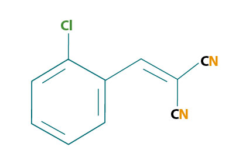

There are many types of tear gas . The tear gas most widely used by police agencies is 2-chlorobenzalmalononitrile (C10H5ClN2). Two American scientists, Ben Carson and Roger Staughton, developed C10H5ClN2, and as a result, the first letters of their surnames, CS, are used as its acronym.
2-chlorobenzalmalononitrile

Unlike the suggestion of the name tear gas, at room temperature CS is a white solid and must be released as an aerosol rather than a true gas. In its aerosol form, CS is dispersed as fine particles, or it is dissolved in a solution.
CS is stable when heated and at room temperature. It has a low solubility in water and a high solubility in basic or alkaline solutions. CS will eventually dissolve in water (15 minutes), but it dissolves very rapidly in an alkaline solution (1 minute). Therefore, CS is easily removed using an alkaline solution of sodium bicarbonate (baking soda) and water.
On occasion, police officers on horseback are sent into crowds of rioters. The height and large size of the horse usually allows an officer to infiltrate safely a large unruly crowd. However, this did not prove true in a hunger riot in Vienna in 1919. The rioters killed two horses that police officers were riding and butchered the horses for food.